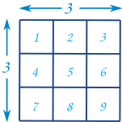
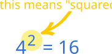
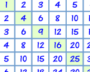
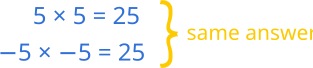
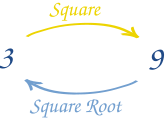
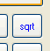

Squares and Square Roots
First learn about Squares, then Square Roots are easy.
How to Square A Number
Example: What's 3 squared?
| 3 Squared | = |  |
= 3 × 3 = 9 |
"Squared" is often written as a little 2 like this:

This says "4 Squared equals 16"
(the little 2 says the number appears twice in multiplying)
Squares From 02 to 52
| The squares are also on the Multiplication Table: |
 |
Negative Numbers
What happens when we square a negative number?
Example: What happens when we square (−5) ?
Answer:
(−5) × (−5) = 25
(because a negative times a negative gives a positive)
That was interesting!
When we square a negative number we get a positive result.
Just the same as squaring a positive number:

(For more detail read Squares and Square Roots in Algebra)
Square Roots
A square root goes the other way:

3 squared is 9, so a square root of 9 is 3
A square root of a number is ...
A square root of 9 is ...
It is like asking:
What can we multiply by itself to get this?
|
To help you remember think of the root of a tree: "I know the tree, but what root made it?" In this case the tree is "9", and the root is "3". |
Here are some squares and square roots:
| 1 | 1 | |
| 2 | 4 | |
| 3 | 9 | |
| 4 | 16 | |
| 5 | 25 | |
|
6 |
36 | |
|
7 |
49 | |
Generally
It also works generally.
Try the sliders below (note: '...' means the decimals continue on forever):
Use the sliders to answer these questions:
- What's the square root of 8?
- What's the square root of 9?
- What's the square root of 10?
- What's 1 squared?
- What's 1.1 squared?
- What's 0.5 squared?
- What's 0.1 squared?
Negatives
We discovered earlier that we can square negative numbers:
Example: (−3) squared
(−3) × (−3) = 9
And of course 3 × 3 = 9 also.
So the square root of 9 could be −3 or +3
Example: What are the square roots of 25?
(−5) × (−5) = 25
5 × 5 = 25
So the square roots of 25 are −5 and +5
The Square Root Symbol
This is the special symbol that means "square root", it is like a check mark,
and it likely evolved from the letter "r" for radix (Latin for root).
It is called the radical, and always makes mathematics look important!
We can use it like this:
and we say "square root of 9 equals 3"
Example: What's √25?
25 = 5 × 5, in other words when we multiply 5 by itself (5 × 5) we get 25
So the answer is:
√25 = 5
But wait a minute! Can't the square root also be −5? Because (−5) × (−5) = 25 too.
- Well the square root of 25 could be −5 or +5
- But with the radical symbol √ we only give the positive (or zero) result
This positive result is called the principal square root.
Example:
The square roots of 36 are 6 and −6
But √36 = 6 (not −6)
Perfect Squares
The perfect squares, also called square numbers, are the squares of the integers:
| Perfect Squares |
|
| 0 | 0 |
| 1 | 1 |
| 2 | 4 |
| 3 | 9 |
| 4 | 16 |
| 5 | 25 |
| 6 | 36 |
| 7 | 49 |
| 8 | 64 |
| 9 | 81 |
| 10 | 100 |
| 11 | 121 |
| 12 | 144 |
| 13 | 169 |
| 14 | 196 |
| 15 | 225 |
| and so on... |
Try to remember them up to 12.
Calculating Square Roots
It is easy to work out the square root of a perfect square, but it is really hard to work out other square roots.
Example: what's √10?
Well, 3 × 3 = 9 and 4 × 4 = 16, so we can guess the answer is between 3 and 4.
- Let's try 3.5: 3.5 × 3.5 = 12.25
- Let's try 3.2: 3.2 × 3.2 = 10.24
- Let's try 3.1: 3.1 × 3.1 = 9.61
- ...
Getting closer to 10, but it will take a long time to get a good answer!
|
At this point, I get out my calculator and it says: 3.1622776601683793319988935444327 But the digits just go on and on, without any pattern. So even the calculator's answer is only an approximation ! |
Since the decimals go on forever, we usually round our answer:
√10 = 3.162 (rounded to 3 decimal places).
Note: numbers like that are called Irrational Numbers, if you want to know more.
The Easiest Way to Calculate a Square Root
 |
Use your calculator's square root button! |
And also use your common sense to make sure you have the right answer.
A Fun Way to Calculate a Square Root
There's a fun method for calculating a square root called the Divide and Average Method. It gets more and more accurate each time around.
Start with a guess, for example, let's guess 4 is the square root of 10:
- Divide your number by the guess (10 / 4 = 2.5)
- Add that result to your guess (4 + 2.5 = 6.5)
- Halve it by dividing by 2 (6.5 / 2 = 3.25)
- Set this as your new guess, and repeat the steps
- Our first attempt got us from 4 to 3.25
- Going again gets us 3.163
- Going again gets us 3.1623
After 3 times around the answer is 3.1623, which is pretty good, because:
3.1623 × 3.1623 = 10.00014
Now ... why don't you try calculating the square root of 2 this way?
How to Guess
What if we have to guess the square root for a difficult number such as "82,163" ... ?
In that case we could think "82,163" has 5 digits, so the square root might have 3 digits (100×100=10,000), and the square root of 8 (the first digit) is about 3 (3×3=9), so 300 is a good start.
Square Root Day
The 4th of April 2016 was a Square Root Day, because the date looks like 4/4/16
The next after that's the 5th of May 2025 (5/5/25)